A bench, two PDFs and a folder of CAD
The ETA 6497 is a big, honest, hand-wound movement. It was designed for pocket watches, it is 36.6 mm across, it has 17 jewels, and it beats 21,600 times an hour. Watchmaking students take it apart and put it back together because everything is large enough to see. I had three things on my disk:
- ETA’s Technical Communication for the 6497-2: 24 pages of exploded drawings, a parts list, and the order of assembly, with torques and lubricants.
- ETA’s Manufacturing Information: frequency, lift angle, power reserve, the mainspring and balance specifications.
- A community CAD model of the 6497-1 from GrabCAD, in every format under the sun: STEP, STL, VRML, Rhino, SolidWorks.
And I had one sentence, which I gave to Claude Code as a standing goal:
Using the PDF documentation and 3D model files, create a WebGL interactive assembly game where the watch is assembled piece by piece and can be run. Add automated assembly and run-the-watch buttons. Make the UI in the style of the classic George Daniels book Watchmaking.
If you don’t know it, Daniels’ Watchmaking (1981) is the bible: cream pages, Garamond, small capitals, and line drawings with lettered callouts (“A, centre wheel; B, third wheel”). I wanted to know two things. Can an agent read real engineering documents and a real CAD assembly and turn them into something mechanically faithful? And what does that cost now?
Reading the drawings
The first good decision was not mine. Faced with that pile of formats, Claude went past the obvious one. The STL is a single 38 MB anonymous triangle soup. The VRML has 84 shapes, all named “ETA 6497-1 Movement”. But a STEP file keeps the assembly tree from the original CAD tool, and a quick grep showed 44 named products: 100 Main Plate, 201 Centre wheel, 705 Escape wheel, 5110 Screw for train wheel bridge, and so on. For a game where parts must move separately, that tree is everything.
flowchart LR S["STEP assembly
18 MB, 44 named parts"] --> T["occt-import-js
Open CASCADE in WASM"] --> P["packed meshes
3.5 MB, quantized"] --> G["three.js scene
one pivot per arbor"] D["ETA PDFs
order of assembly, specs"] --> J["parts.js
41 steps, 6 stages"] --> G
Open CASCADE, compiled to WebAssembly, tessellated the B-rep surfaces in about ten seconds: 89 meshes and 219,000 triangles. A small packer stored positions as 16-bit integers across the movement’s bounding box, which is about 0.6 µm of precision, and normals as 8-bit. The whole movement ships in 3.5 MB.
Then came the part that made me sit up. A wheel in a game needs an axis to turn about, and CAD files don’t label axes. Claude found them the way a watchmaker would, from the jewels. It took the bounding boxes of the small ruby meshes in the train bridge and the plate, and measured the arbors from them: the escape wheel at (4.70, −10.65) mm, the pallet staff at (7.08, −7.81) mm, the balance at (10.363, −3.905) mm. Where the wheel’s own bounding box and its jewel disagreed by 35 µm (fifteen teeth is an odd number, so the box is lopsided), it trusted the jewel.
The PDFs gave the order. ETA lays out the assembly in six stages, by position number. That became a 41-step data file, with ETA’s own torques on every screw and its lubricants where it names them:
| Stage | Side | What goes in | From the ETA document |
|---|---|---|---|
| I. Keyless work | dial | setting lever, winding and sliding pinions, stem | screw 900 at 1.0 Ncm, “max. 2 turns” until the stem is in |
| II. Yoke and setting wheels | dial | yoke, yoke spring, setting wheels, minute wheel, jumper | Moebius HP-1300 or D5; screw 901 at 1.2 Ncm |
| III. Going train | bridge | escape, third, second and centre wheels; train bridge | screws 902 at 1.3 Ncm |
| IV. Barrel and winding | bridge | barrel, barrel bridge, crown wheel, click, ratchet | 0.8 to 1.3 Ncm by screw |
| V. Escapement | bridge | pallet fork and bridge, balance, balance bridge | lift angle 44° |
| VI. Motion work | dial | cannon pinion, hour wheel | — |
One detail from the parts table is worth noting. The setting-lever screw is listed in the dial-side stage, but in the model its head sits on the bridge side. Claude noticed, and the game turns the movement over for that one screw. That is also how a real 6497 works: you release the stem from the back.
From a pile of parts to a going train
The interaction model came together quickly:
- Pick the next part from the parts list. A wrong choice counts as a fault.
- The part follows your pointer over a shadow of where it belongs, with a little magnetism when it is close, and you click to seat it.
- Screws spin down as they go home, and the movement turns itself over when the work changes sides.
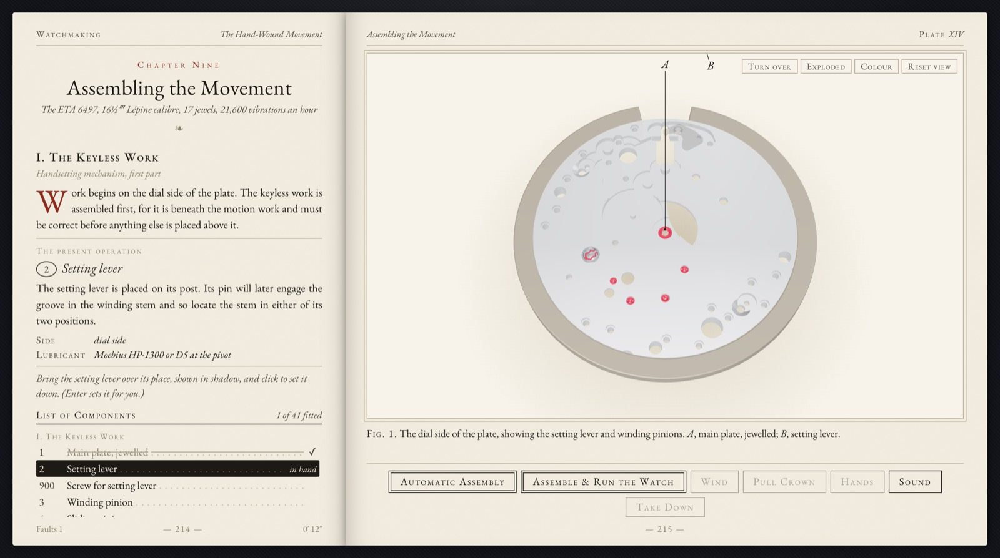
Making it run was the interesting engineering. Claude did not animate each wheel at its own speed. It derived everything from the balance:
- The balance swings at 3 Hz, which is ETA’s 21,600 vibrations an hour.
- The escape wheel advances half a tooth, 12°, on each beat, and only while the balance is inside the 44° lift zone.
- Every other wheel, the hands, the mini-dial and the 56-hour power reserve follow from those escape steps through the gear ratios.
Because of that, the behaviour follows from the mechanism instead of being scripted. Let the mainspring run down and the amplitude falls. Once the balance can no longer swing through the lift zone, the escapement stops releasing teeth and the watch stops on its own.
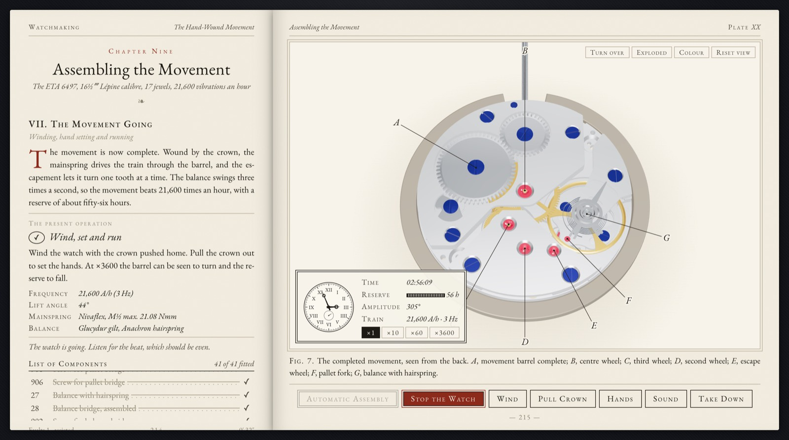
There is an honest gap here, and the agent stated it up front. The ETA documents do not give tooth counts, and the CAD model only implies them. So the gear ratios are plausible choices that make the seconds, minute and hour timing correct, not the 6497’s real counts. The hands keep correct time. A wheel-by-wheel tooth count would be the next thing to extract from the geometry.
Iterating like an art director
After the first build, my job was mostly taste. Each request was one sentence, and each took a few minutes:
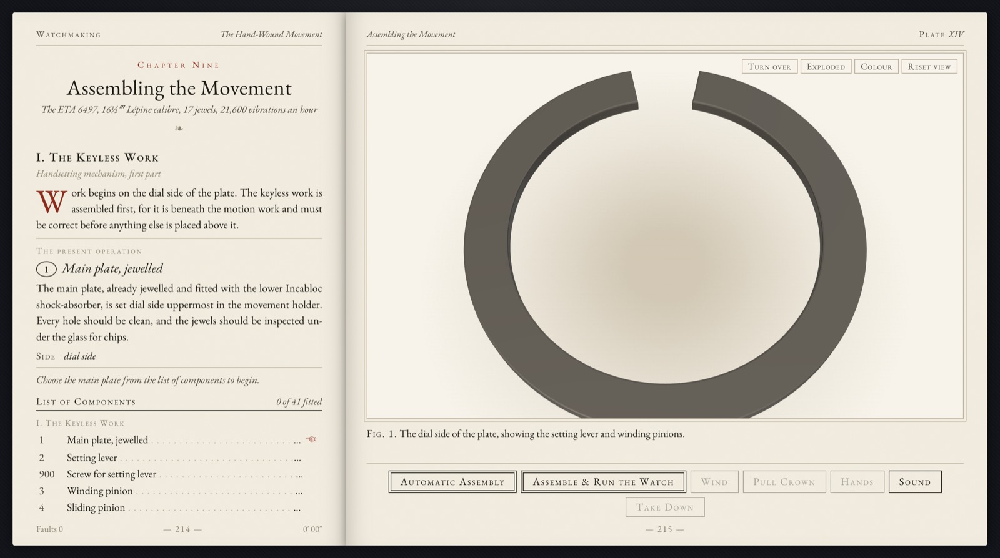
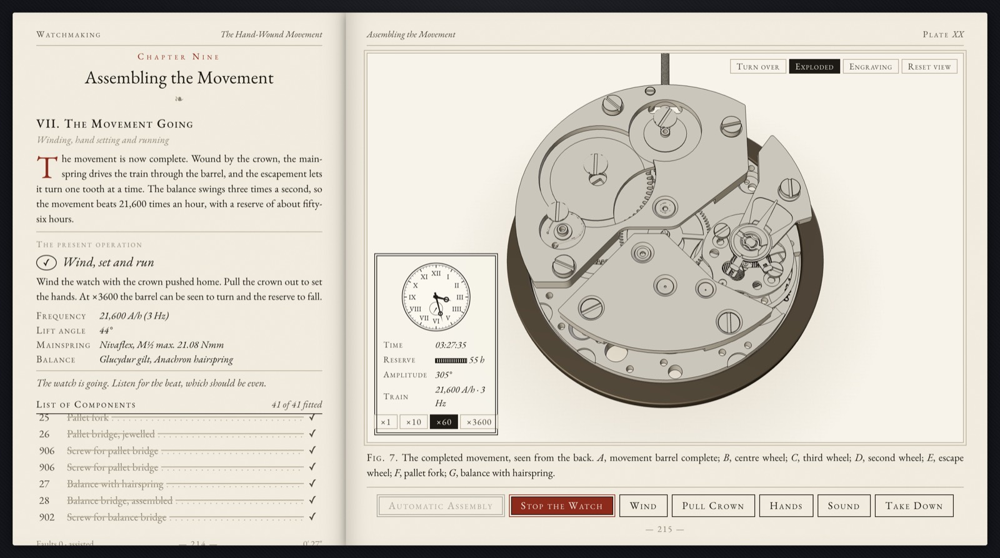
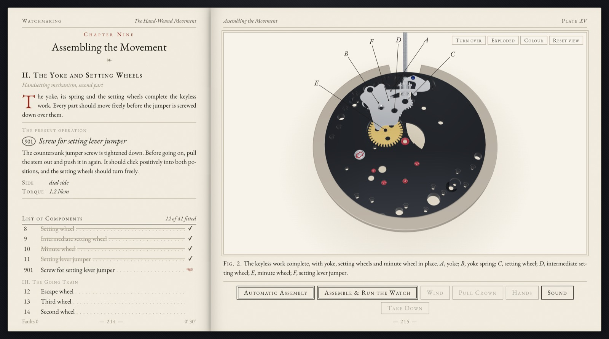
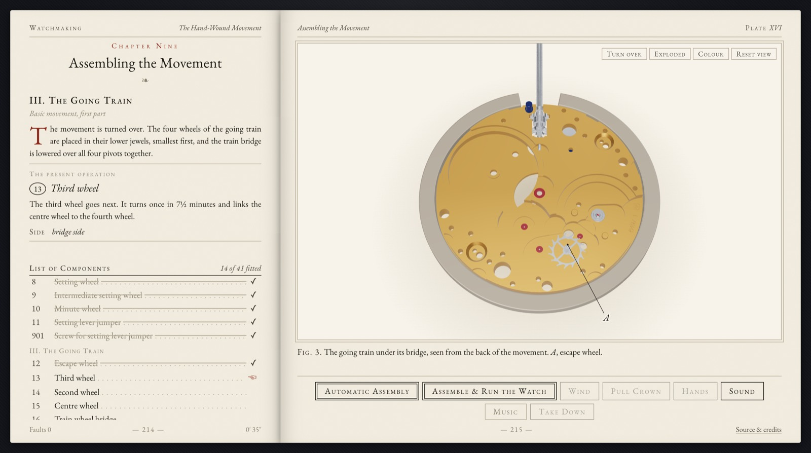
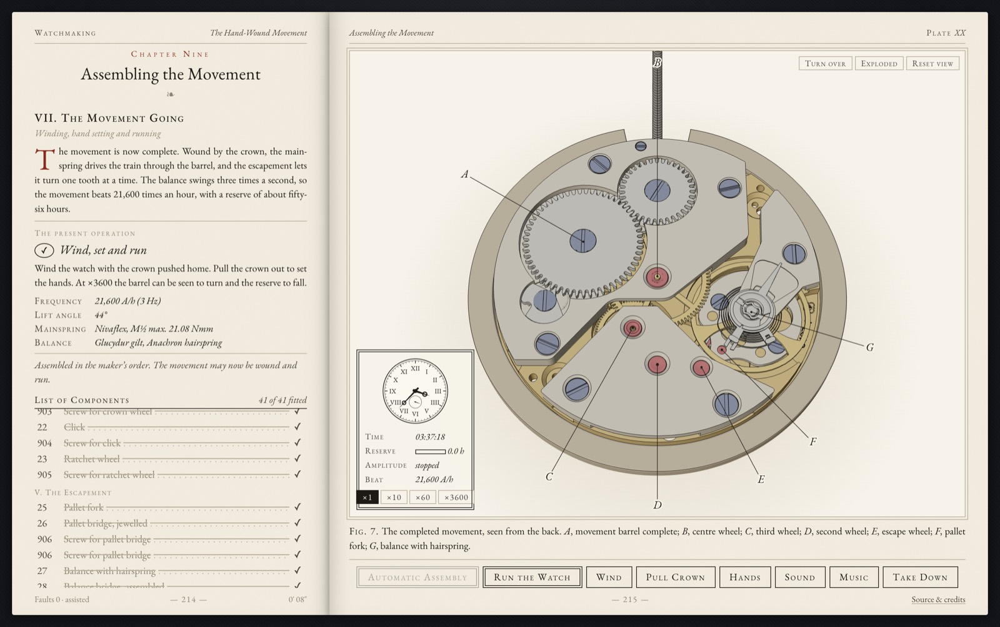
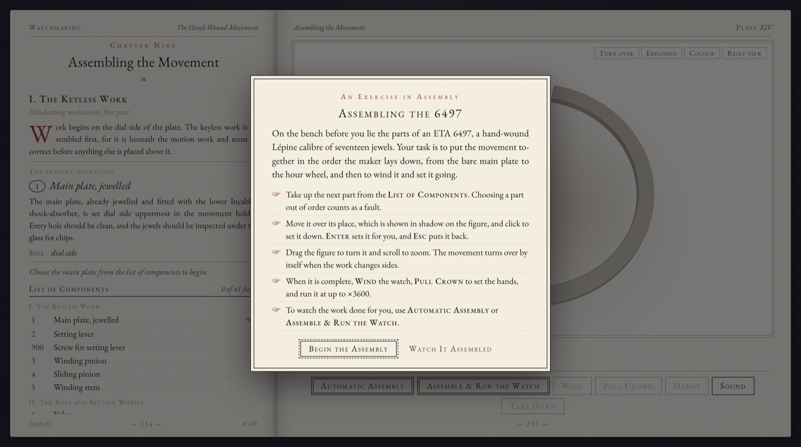
The music request is my favourite example of the agent doing the boring parts properly. I asked for “a low-bitrate Mozart track”. Here is what Claude did:
- Searched Wikimedia Commons and picked a Musopen recording of the String Quartet K. 465 (Andante cantabile), checking that the recording, not just the composition, is public domain.
- Found there was no ffmpeg, and used macOS’s built-in
afconvertinstead. - Hit a channel-mixing error, worked around it with a two-step encode, and got the 72 MB FLAC down to 1.9 MB of 32 kbps mono AAC.
- Credited it, along with the CAD model, the ETA documents, the typeface and the libraries, in an in-game credits panel and the README.
It also raised the question I hadn’t asked: the GrabCAD model’s licence was unclear, so publishing meshes derived from it was my call to make, not its call.
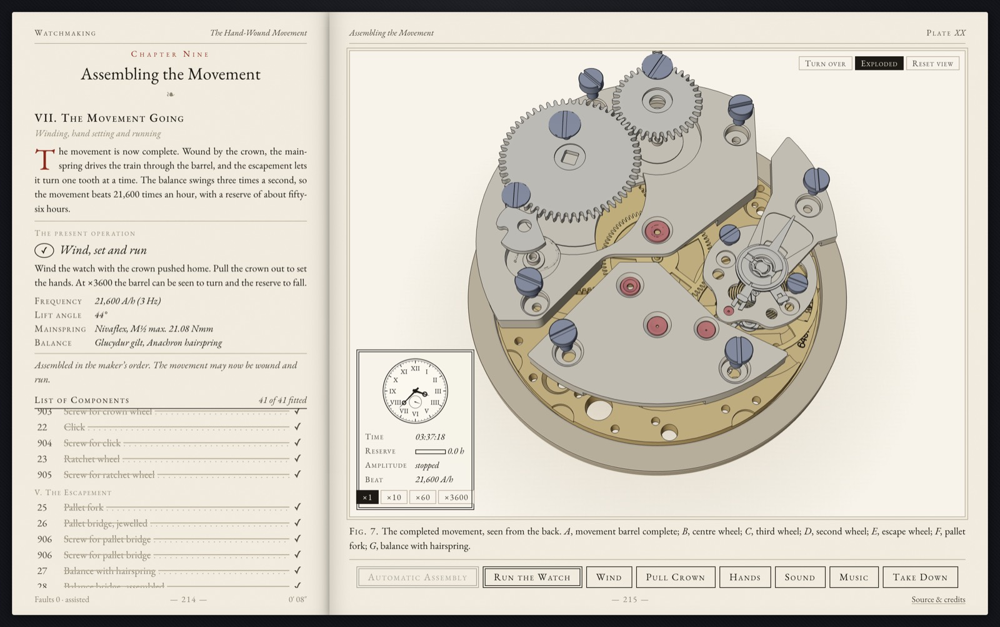
What the agent got wrong
As in my seL4 port, the instructive mistakes were the ones that looked fine.
The screws were loosening themselves in. From the very first build, every screw spun anticlockwise as it seated: the unscrewing direction. The code comment said exactly the right thing: “right-hand threads clockwise from the head, the crown wheel screw left-handed”. The sign in the formula did the opposite. Nobody noticed, including me, until I asked directly whether the screws turned the right way. Claude didn’t trust its own algebra a second time. It seated all 13 screws in the browser while projecting a point on each screw’s rim to screen space, frame by frame, through every camera and turn-over transform:
| Screws | Head faces | Measured on screen, seen from the head |
|---|---|---|
| 11 bridge, click, ratchet and setting-lever screws | back | −3.00 turns · clockwise |
| Jumper screw (901) | dial | −3.00 turns · clockwise |
| Crown wheel screw (903), left-hand thread | back | +3.00 turns · anticlockwise |
That is the lesson of the whole session in one table. The intent was right, the implementation was wrong, and only a measurement of what was actually rendered settled it.
The rest of the list is smaller and just as telling:
- The first rubies rendered as pink candy.
- A callout letter hid under the rate card.
scrollIntoViewdragged the whole phone page down to the parts list.- A rewrite of the README’s image alt text dropped one
], so the screenshot showed as raw text on GitHub. - The original lights were fixed in the world, so orbiting to the far side left parts in shadow. The fix was a headlight that travels with the camera, like a bench lamp that follows the eyeglass, plus hiding the contact shadow from below.
The first three were caught by the agent’s own screenshot checks. The last two needed my eyes.
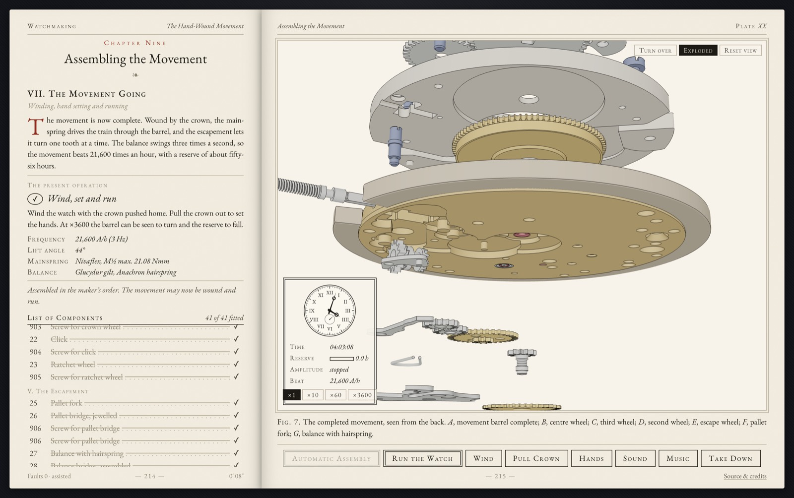
What it cost
Measured from the session transcript and the git history, up to the lighting fix:
| Measure | Value |
|---|---|
| Time from my first prompt to the first working, committed game | 37 min |
| Active session time (gaps under 5 minutes) | ~1 h 12 min |
| My requests | 13 |
| Model responses / tool calls | 137 / 165 |
| Output tokens | ~144 k |
| Cache writes / cache reads | 0.6 M / 31.9 M |
| Commits | 9 |
| Code: game logic / assembly data / CSS / HTML | 1,001 / 222 / 326 / 143 lines |
| Assets: model / music | 3.5 MB / 1.9 MB |
Time and tokens are this session only. Tessellation tooling, the public repo, GitHub Pages, the MIT licence and credits are all included. Writing this post is not.
The state of agentic mechanical design, from one bench
One movement is not a survey, so take this as field notes.
Reading an existing design is now cheap. The agent read a 24-page service document and a CAD assembly, worked out where every arbor is from the jewels, and produced a faithful, interactive assembly sequence in well under an hour. Plenty of firms pay for that kind of interactive service manual or training tool today. It is turning into a conversation.
The file is not the design. The STEP file knows where every surface is. It does not know tooth counts, thread handedness, which way a wheel turns, or why the setting-lever screw goes in from the back. Some of that is in the PDFs and some is in the agent’s background knowledge. Some of it, like the real tooth counts, was in neither, and the honest move was to say so. Mechanical design intent lives across drawings, documents and people’s heads, and the agent does best when it can get at all three.
Spatial bugs are plausible bugs. A sign error in a rotation looks exactly like a working screw unless you know to watch the direction. The fix was the same as in software verification: instrument the real output and compare it with the physical truth. I expect “measure the rendered thing” to become a standard step for mechanical agents, the way tests are for code.
Provenance is part of the job. The agent kept the ETA PDFs out of the public repo because of their rights notice, checked the recording’s licence, and flagged the CAD model’s unclear terms instead of shrugging. In mechanical work, where models get downloaded and passed around endlessly, that matters more than people admit.
The human is the watchmaker, not the hands. I chose the brass, the engraving, the quieter ticks, and asked the awkward question about the screws. The agent did the tessellation, the kinematics, the encoding, the deploys and the hundred small corrections. That split felt right.
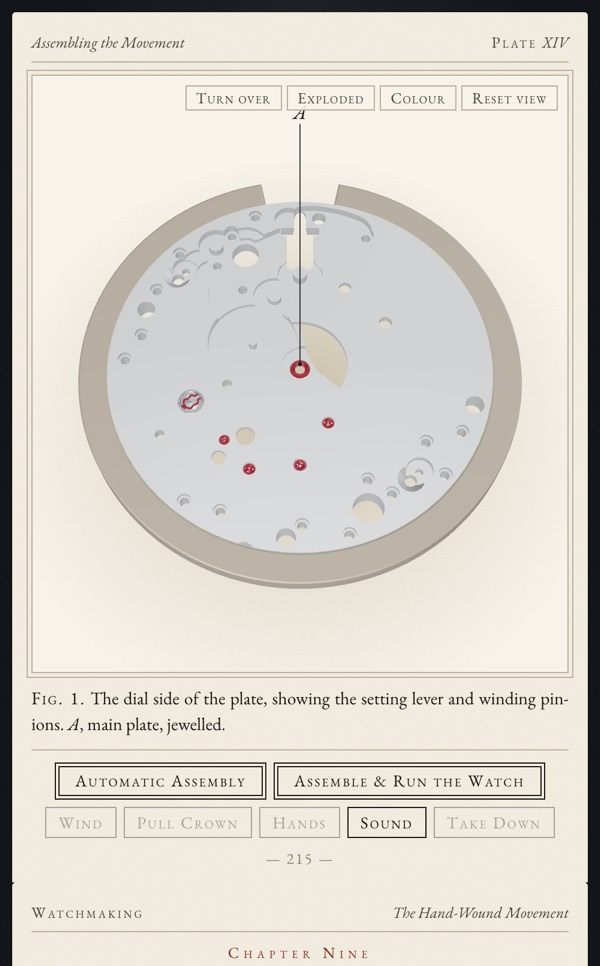
Not long ago, a faithful interactive teardown of a Swiss movement meant a team, a CAD seat, a 3D artist and weeks. This week it meant two PDFs, a downloaded model, one sentence and a cup of coffee. Then I spent the rest of the night arguing about the colour of brass. What a time to be alive.